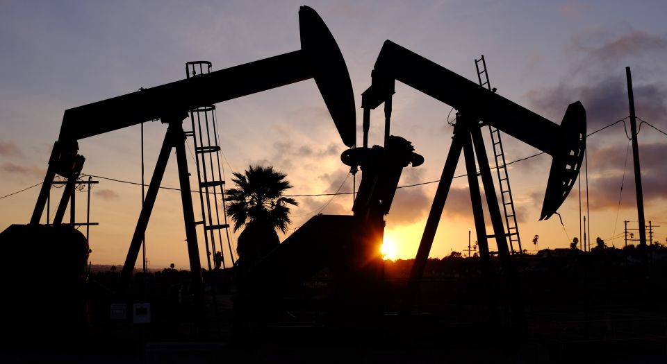

Hydraulic Fracturing and Horizontal Drilling
This controversial method of fossil fuel extraction has been under scrutiny by envrionmental groups due to cases of water contamination and earthquakes but fracking and horizontal drilling have proved to be a key part in the United States efforts in lowering its CO2 emissions.
The controversial method of hydraulic fracturing is a revolutionary new way to take fossil fuel sources such as oil and natural gas from the ground. The process consists of a drill rig digging a well deep into the ground where these fuels are located. With the combination of water, chemicals, and pressure, the fossil fuels begin to rise the surface of the well. This process allows for previously impossible sources of fossil fuels, such as tightly formed shale rock, to now be extracted for natural gas. This has produced a large supply of global energy causing a significant price drop. The facts are that this new type of drilling stimulates the economy by allowing for cheaper fuel sources and creating temporary jobs. However, fracking has faced large opposition primarily from environmental advocacy groups, and from local communities and politicians that are directly affected by fracking. Fracking has its benefits, as well as its drawbacks, and it’s important to understand both before someone can make an informed decision on this complicated issue.
In an economic sense, the pros of fracking are evident as the fracking industry provides an opportunity for temporary jobs and macro-economic stimulation through vast energy savings. Fracking operations often takes place in communities that are in an economic downturn. These fracking rigs often employee locals within the community giving the local economy a much-needed jumpstart. The process of fracking has also created a tremendous surplus of fossil fuels. At one point society thought we would soon run out of fossil fuels, as consumers saw energy prices skyrocketing. With the introduction of fracking, the industry has created a large surplus of various energies with supply far exceeding demand. This reduction in price has caused global energy consumers to save billions of dollars. Yale economists state that American’s alone have saved $103 billion on natural gas because of fracking. In 2008, when fracking became more prevalent, the prices of natural gas fell $4.02 while America was using nearly 35.2 trillion cubic feet of natural gas. The billions saved often stimulate the overall economy because of increased consumer spending and consumption.
Economic reasons aside, you can make a case for fracking from an environmental standpoint as well. Natural gas is cleaner than coal in terms of emissions so a long-term increase in natural gas could make dirty coal emissions less and less prevalent. However, many studies and researchers have claimed that this is misleading. A Stanford review of 200 earlier studies found that emissions of methane from fracking was much higher than officially reported.
While fracking has a definite economic benefit and someone could make an argument for a net reduction in greenhouse gases, it comes with controversy. A few issues that come up relate to drinking water quality, earthquakes, infrastructure and resources. In terms of air quality, what we know right now fracking and natural gas is an improvement from coal fired energy productions. Drinking water is a different story. Many people have reported that after fracking took place near their residence, tap water that they depended on for drinking and bathing was contaminated. In some cases, it was poisoned with Arsenic levels five times higher than a safe amount. Fracking has caused a lot stress and displacement for certain communities especially in terms of drinking water but corporations who employee fracking methods often claim that the water was contaminated before their arrival. After thorough research, it can be concluded that fracking has affected people’s drinking water in ways that are unacceptable. However, these cases are extremely few and far between in terms of the scale in which fracking is taking place. When making decisions about this form of drilling, drinking water horror stories need to be assessed with perspective of the full situation.
In many places like Texas and Oklahoma, fracking is causing seismic concerns. There has been a large increase in earthquakes within this region in the past 15 years. This large increase is troubling because many geologists claim that oil and gas extraction in the area has triggered a fault line that has typically been inactive. A study from the 2014 Annual Reviews of Environment and Resources states that “between 1967 and 2000, geologists observed a steady background rate of 21 earthquakes of 3.0 Mw or greater in the central United States per year. Starting in 2001, when shale gas and other unconventional energy sources began to grow, the rate rose steadily to [approximately] 100 such earthquakes annually, with 188 in 2011 alone.” However, these changes haven’t been studied in depth and makes things difficult when assessing the impact. Pro-fracking advocates claim that fracking has had little to no impact on these earthquakes and that they are simply natural occurrences. To date these earthquakes have caused no injuries or damages.
A Harvard study and report claims that as of March 2014 there have been nearly 15 million Americans with a fracking rig one mile or less from their homes. With this information, it seems that fracking is literally taking place in people’s backyards. Another problem is that the fracking process is extremely water intensive. A fracking well can use anywhere from 2 – 20 million gallons of water to complete the fracking process. This water is typically taken from local water sources creating a lasting impact. It is also simply not enjoyable to live near a fracking rig. Living near a fracking rig ultimately decreases quality of life by hurting the surrounding landscape while also driving down property value. If an oil company decides to create a rig next to your house, it will be increasingly difficult to sell that house.
Many different scientists, journalists, energy workers, environmentalists, and politicians have weighed in on this issue. There are a multitude of different studies, experiments, and research that cover the entire spectrum for and against fracking. I believe that state and federal governments will never completely ban fracking and for good reason. The monetary benefits are simply too large for the fossil fuel dependent society we live in today. However, fracking needs to be done responsibly and with tact. Fracking should be occurring in places with large natural gas shale reserves located in remote areas. These remote places should be studied and examined closely to make sure they are not harming the wildlife or overall ecosystem in a significant way. While there is obvious externality production in any energy industry, there is no excuse for negligence in search of extra profit, especially in the case of safe drinking water. I believe that the natural gas industry is a crutch to lean on, as we continue to search for cleaner renewable energy. This crutch should not paralyze us or force us to go backwards in our innovation efforts towards clean energy. We should continue to invest, subsidize and incentivize in clean energy but this doesn’t mean that we can’t have a balanced portfolio of energy types as we make this transition. While natural gas and fracking isn’t perfect, we should continue to use this cheap, efficient, and relatively cleaner fossil fuel. During this time, we need to make sure we are constantly studying the effects of natural gas on plate tectonics, the atmosphere, and water. I believe one day the entire planet will be run on renewable clean energy but that day is much farther along and we are going to need natural gas to get us there.